홈
›
Portfolio
›
Dry & Wet Electrode Inspection Project
Dry & Wet Electrode External Inspection Machine (Coating Process)
건/습식 전극 외관 검사 시스템
1. 프로젝트 개요
- 프로젝트 목적 : 전극 코팅 공정에서 발생하는 결함 검출 및 폭 측정
- 기간 : 2024.03 ~ 2026.06
- 기술 스택 : C++, MFC, DALSA Sapera SDK, ViDi, Ajin Motion Controller
- 역할 : 전극 코팅 검사 시스템의 Vision SW 전반(영상 획득, 검사, UI, 데이터 관리, 하드웨어 제어) 설계 및 개발 담당
2. 기능 개발
[Inspection]
- 테이프 검사 리팩토링 및 관련 기능
- 영상 획득 시 발생하는 포커스 및 밝기 이상 검출
- 블랍(Blob) 특징 데이터 산출
[Inspection Simulation]
- 획득한 영상을 검사 할 수 있는 시뮬레이션 기능
- 배치 이미지 로드 및 관리 기능
- 검사 진행 상태 및 결과 표시 기능
- 이미지 탐색 및 수동 검사 기능
[Data Management]
- 검사 결과 데이터 구조화 생성 및 CSV 저장 기능
- 결과 데이터 기반 불량 데이터 검색 기능
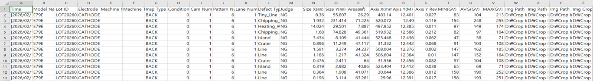
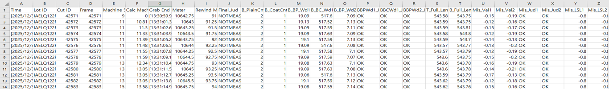
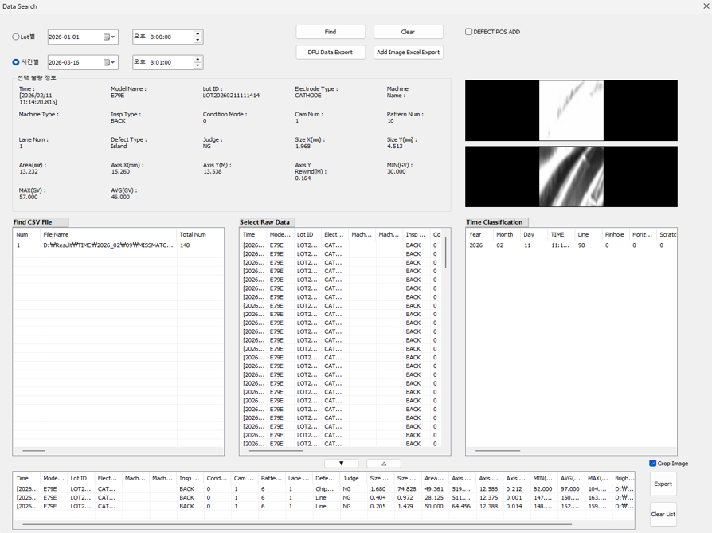
[Camaera Communication]
- 카메라 ↔ 프로그램 간 통신 연결
- 카메라 파라미터 값 읽기 및 쓰기
- Live 영상 출력 기능
- 조명 컨트롤 기능
- 카메라 설정 값 → 레시피 연동 기능
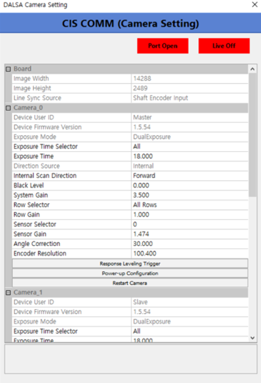
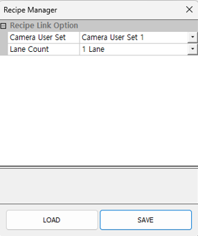
[Hardware Control]
- 디지털 입출력 읽기/쓰기 및 상태 표시 기능
- 카메라 및 조명 실린더 제어 기능
- 검사기 하드웨어 위치 확인 알람 발생 기능
- 엣지 기반 카메라 위치 자동 변경 기능
- 모터 제어 스레드 구현
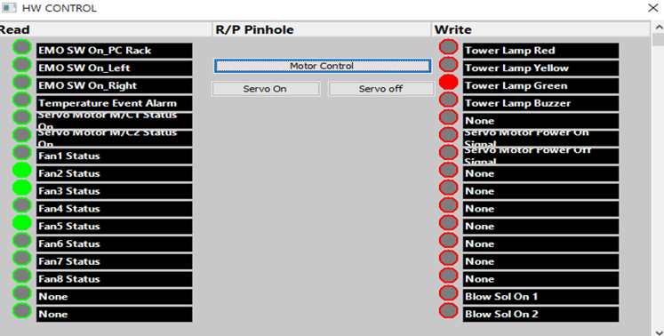
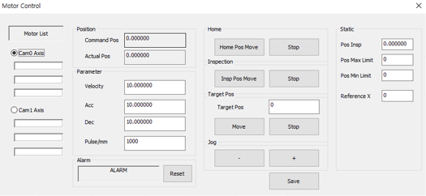
[User Interface]
- Surface View : 검사 결과 오버레이 표시 기능
- Edge View : 디스플레이 샘플링 및 영상 선택 기능
- Defect Map : 불량 위치 표시 기능 및 크롭 이미지 표시 기능
- Defect Count : 불량 유형별 카운팅 기능
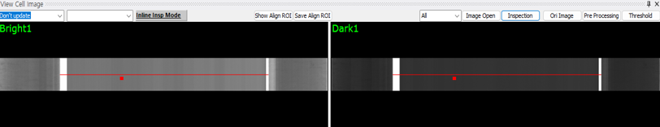
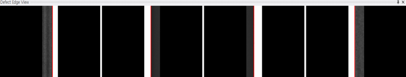
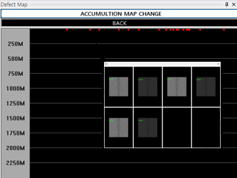
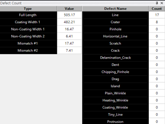
4. 배운 점 / 성장 포인트
- 프로젝트 전체 사이클을 직접 경험하며, 비전 프로그래밍 시스템 구조를 학습
- 영상처리, 장비 제어, UI 개발을 수행하며 다양한 기술을 통합적으로 활용하는 능력을 확보
- 다양한 이슈를 직접 해결하며 원인 분석 및 디버깅 역량을 향상